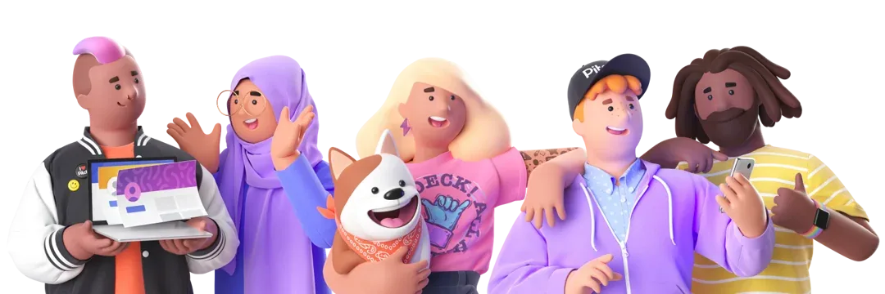
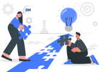
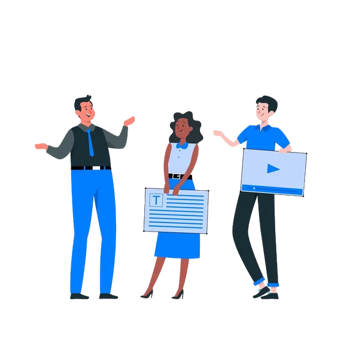

Your Ultimate Gateway
to Peer-Led Growth
An open community for learners, makers, and innovators

What µLearn offers
µLearn offers a wide range of features and opportunities that help you learn, grow, and upskill yourself in a fun and engaging way. Here are some of the key features that µLearn offers.
Understand μLearn with a Story
Meet Aami, an eager learner hungry for growth! Join her voyage through the captivating µVerse, where she seizes opportunities, builds learning circles, and immerses herself in events, emerging industry-ready with newfound skills and confidence.


μLearn is here to solve all your learning problems
| Problems with Existing Systems | How μLearn Works |
|---|---|
| Fragmented Resources | Structured Roadmaps |
| Lack Of Right Advice | Mentorship from industry veterans |
| Lack of Access to Opportunities | Opportunities from the best in every industry |
| Limited Exposure | Exposure to global leaders and thinkers |
| Lack of motivation to learn | Gamified platform working based on Karma points |
At The End Of a μLearners Journey
At the end of a μLearner's journey, they are equipped with a plethora of opportunities to choose from. They can choose to work in a job, freelance, research, start their own venture, or work for a social cause.
Job

Freelance
Research
Entrepreneurship
Social Cause
Roles in μLearn Network
A brief overview of the diverse roles that power our network.

Learn and Grow Together as a Community
Are you ready to learn, grow, and upskill yourself to the next level? Come, be a part of the community, and let's start learning in a new, better way. Call your friends as well because things are going to change once you experience it, and it is more effective when done in a group.